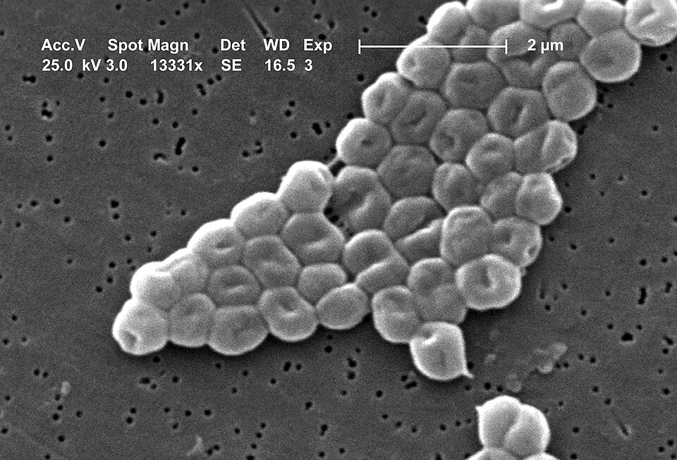

Executive Summary
생성형 AI가 설계한 신약 후보는 대개 컴퓨터 안에서만 좋아 보이다가 실험실에서 무너집니다. 이번에는 그렇지 않았습니다. 펜실베이니아대 César de la Fuente와 Jacob Gardner 팀이 만든 ApexGO는 멸종 동물에서 발굴한 항균 펩타이드를 출발점 삼아 새 후보를 편집해 냈고, 그 후보들이 시험관을 넘어 살아 있는 쥐에서 약처럼 작동했습니다. 이 글은 그 결과 자체보다, 모델의 낙관이 이번엔 왜 실험실에서 배신당하지 않았는지를 데이터 설계의 눈으로 봅니다.
숫자 하나가 이례성을 압축합니다. AI가 편집한 펩타이드의 85%가 시험관에서 세균 성장을 멈췄습니다. 생성 모델을 또 다른 모델의 점수에 맞춰 최적화하면 흔히 시뮬레이션 안에서만 그럴듯한 후보가 쏟아지는데, 이번엔 그 대부분이 실제 습식 실험에서 재현됐습니다. 나아가 다제내성균에 감염된 쥐 모델에서 최적화 펩타이드 2종이 최후의 항생제로 불리는 폴리믹신B에 필적하거나 이를 능가했습니다.
차이를 만든 것은 더 큰 모델이 아니라 데이터 설계였습니다. 검증 가능한 활성 데이터, 템플릿을 반복 편집하는 제약 조건, 불확실성 추정으로 실험 대상을 좁히는 선별. 이 세 가지가 생성-예측 루프를 컴퓨터 밖으로 끌어냈습니다. 지난달 다룬 정반대 사례, 성공만 학습해 활성을 과대평가한 신약 AI와 나란히 놓으면 그 대비가 선명해집니다.
주요 수치
이 연구의 핵심을 네 숫자로 압축하면 다음과 같습니다. 시험관에서 세균 성장을 멈춘 비율, 원본 템플릿을 능가한 비율, 쥐 감염 모델에서 도달한 효능의 기준선, 그리고 편집의 출발점이 된 템플릿 펩타이드의 수입니다.
출처: Nature Machine Intelligence (2026), NIH Research Matters
85%
세균 성장 정지
AI가 편집한 펩타이드 중 시험관에서 억제력을 보인 비율
72%
원본 능가
출발점이 된 원본 템플릿보다 강한 항균력을 보인 비율
폴리믹신B급
쥐 감염 모델 효능
최후 항생제에 필적·능가한 세균 수 감소 (펩타이드 2종)
10종
템플릿 펩타이드
매머드·땅늘보 등 멸종 동물 유래 편집 출발점
쥐에서 통한 AI 항생제
항균제 내성은 조용히 커지는 위협입니다. 폴리믹신B나 콜리스틴 같은 펩타이드 항생제는 다제내성 그람음성균에 대한 사실상 마지막 카드로 남아 있습니다. 새 후보를 빨리 찾아야 하지만, 실험실에서 하나하나 합성하고 검증하는 과정은 느리고 비쌉니다. 펜실베이니아대 César de la Fuente와 Jacob Gardner 팀이 만든 ApexGO는 이 병목을 AI로 돌파하려는 시도입니다.
출발점부터 남다릅니다. 이 팀은 앞선 연구에서 매머드와 땅늘보 같은 멸종 생물의 고대 프로테옴을 항생제 후보의 광산으로 채굴했습니다. ApexGO는 그렇게 발굴한 항균 펩타이드 10종을 템플릿으로 삼아, AI가 아미노산 서열을 조금씩 고쳐 가며 더 나은 후보를 만들어 냈습니다. 결과는 두 층위에서 확인됐습니다. 시험관에서는 AI가 설계한 펩타이드의 85%가 세균 성장을 멈췄고, 72%가 원본 템플릿보다 강한 항균력을 보였습니다.

진짜 관문은 시험관 다음이었습니다. 연구진은 다제내성 아시네토박터 바우마니(Acinetobacter baumannii)에 감염된 쥐 모델에서 최적화 펩타이드를 시험했고, 2종이 최후의 항생제 폴리믹신B에 필적하거나 이를 능가하는 세균 수 감소를 보였습니다. 배양 접시에서 통하는 분자와, 살아 있는 몸속 복잡한 환경에서 약처럼 작동하는 분자 사이에는 큰 간극이 있습니다. AI가 설계한 후보가 그 간극을 넘어선 것이 이 연구의 핵심입니다.

연구를 이끈 Jacob Gardner의 우려가 결과의 의미를 잘 보여 줍니다. "ApexGO는 또 다른 컴퓨터 모델을 상대로 최적화했기 때문에, 모델에는 좋아 보여도 실험실에서는 실패하는 분자를 찾아낼까 걱정했다. 그런데 오히려 설계한 분자 대부분이 실제로 작동했다." 흔히 예상되는 실패가 이번엔 일어나지 않았다는 사실 자체가, 저자들이 앞세운 발견입니다.
모델이 모델을 채점할 때
ApexGO의 이름은 그 구조를 그대로 담고 있습니다. 이 팀은 2년 전 펩타이드가 항균성을 가질지 예측하는 판별 모델 APEX를 먼저 만들었고, 여기에 생성과 최적화 기능을 더해 ApexGO를 만들었습니다. 즉 생성 모델이 후보를 제안하면, 그 후보가 얼마나 좋은지는 또 다른 AI 모델인 APEX가 채점합니다. 사람이 만든 후보를 실험으로 검증하는 대신, 모델이 모델의 점수를 좇아 스스로 좋아지는 폐쇄 루프입니다.
이 구조에는 잘 알려진 함정이 있습니다. 최적화가 채점 모델의 약점을 파고들면, 점수판에서만 만점을 받고 현실에서는 무의미한 후보가 나옵니다. 강화학습에서 보상 해킹이라 부르고, 신약 개발에서는 컴퓨터 안 점수와 실제 약효의 괴리로 나타납니다. 지난달 이 블로그가 다룬 성공만 학습한 신약 AI가 정확히 그 반대편 사례였습니다. 발표된 성공 실험만 학습한 모델은 되는 후보가 실제보다 흔하다고 믿었고, 그 낙관은 정확도라는 숫자 뒤에 숨었습니다.
두 이야기는 동전의 양면입니다. 한쪽은 편향된 데이터가 모델을 과신하게 만든 실패였고, 다른 쪽은 모델이 모델을 채점하는데도 실험실 재현에 성공한 사례입니다. 그래서 물어야 할 질문은 하나로 모입니다. 폐쇄 루프가 컴퓨터 안에 갇히지 않으려면 무엇이 달라야 하는가.
핵심은 채점 모델을 얼마나 믿을 만하게 만들었느냐, 그리고 그 모델의 판단을 어디까지 실제 실험으로 검증했느냐입니다. APEX는 결합한 펩타이드만이 아니라 결합하지 않은 경우까지 측정된 활성 데이터로 훈련됐습니다. 검증 가능한 신호 위에 세운 채점 기준이라, 최적화가 그 기준을 좇아도 현실에서 크게 어긋나지 않았습니다.
이번엔 왜 배신당하지 않았나
모델의 낙관이 실험실에서 배신당하지 않은 데는 운이 아니라 설계가 있었습니다. 연구를 이끈 César de la Fuente는 이 도구를 이렇게 설명합니다. 유망하지만 완벽하지 않은 펩타이드에서 출발해 정밀한 편집을 제안하고, 그 편집이 항균력을 높일지 예측한 뒤, 실제로 만들어 검증할 때 작동할 가능성이 더 높은 쪽으로 계속 움직인다는 것입니다. 설계 철학 자체가 컴퓨터 안 점수가 아니라 습식 재현을 겨냥하고 있습니다. ApexGO의 재현성을 떠받친 데이터 설계는 크게 세 가지로 정리됩니다.
3.1무한 탐색이 아니라 제약 있는 편집
ApexGO는 화학 공간을 아무 데나 뒤지지 않습니다. transformer 기반 VAE가 펩타이드 서열을 연속된 잠재 공간에 임베딩하고, 그 위에서 Bayesian 최적화가 이미 검증된 템플릿을 조금씩 편집하며 다음 후보를 제안합니다. 출발점이 이미 항균성이 확인된 분자이기 때문에, 편집은 완전히 새로운 것을 발명하는 대신 좋은 것을 더 좋게 다듬는 방향으로 움직입니다. 탐색 공간이 좁혀지면 모델이 크게 헛디딜 여지도 줄어듭니다.
3.2전수 검증이 아니라 선별 검증
생성 모델은 후보를 거의 무한히 찍어낼 수 있지만, 화학 합성과 실험은 느리고 비쌉니다. ApexGO는 모델에 내장된 불확실성 추정을 이용해, 개선 가능성이 높으면서 모델이 확신하는 후보만 골라 실제 합성과 실험으로 넘깁니다. 모든 후보를 검증하는 대신 확신도 높은 소수만 습식 실험에 태우는 이 선별이, 실험 자원을 아끼면서도 재현율을 끌어올렸습니다.
3.3생성이 아니라 습식 재현이라는 증거
85%와 72%라는 숫자의 무게는 그것이 생성된 후보의 비율이 아니라 습식 실험에서 재현된 비율이라는 데 있습니다. 모델이 좋다고 채점한 것이 아니라, 실제로 만들어 세균에 노출했을 때 성장을 멈춘 비율입니다. 검증 가능한 활성 데이터로 채점 기준을 세우고, 제약 있는 편집으로 탐색을 좁히고, 불확실성으로 실험 대상을 고른 세 겹의 설계가 맞물려 컴퓨터 안 점수를 실험실 결과로 옮겼습니다.
바뀐 것은 모델의 크기가 아니라 모델이 배우고 채점하는 바닥의 설계였습니다. 이 논지는 이 블로그가 de novo 단백질 설계에서 이미 짚은 것과 같습니다. 양산 공학을 만든 것은 더 큰 모델이 아니라 웻랩 데이터 루프였습니다. ApexGO는 그 원리가 항생제 펩타이드에서도 반복된 사례입니다.
쥐 모델은 끝이 아니라 출발점입니다
쥐 모델은 임상으로 가는 긴 길의 첫 계단일 뿐입니다. 사람 대상 시험까지는 독성, 안정성, 제조, 규제라는 관문이 겹겹이 남아 있고, 동물에서 통한 후보가 사람에서 무너지는 일도 드물지 않습니다. 그러니 이번 결과를 항생제 개발의 종착점으로 읽어서는 안 됩니다. 다만 출발점을 다시 정의한 사건으로는 읽을 만합니다. AI가 그럴듯한 후보를 쏟아내는 단계에서, 실험실에서 재현되는 후보를 좁혀 주는 단계로 넘어간 것입니다.
페블러스가 데이터 품질을 이야기할 때 검증 가능성을 앞세우는 이유가 여기에 있습니다. 생성 모델이 스스로를 채점하는 구조는 점점 흔해지지만, 그 점수가 현실과 연결되는지는 채점 기준을 세운 데이터가 결정합니다. 결합한 경우만 담은 데이터로 채점하면 모델은 낙관하고, 결합하지 않은 경우까지 측정한 데이터로 채점하면 모델은 경계를 배웁니다. AI-Ready 데이터를 점검할 때 물어야 할 질문도 같은 방향입니다. 이 데이터는 성공만 담았는가, 아니면 실패까지 담아 모델이 현실의 경계를 배우게 하는가.
Editor's Note. 이 블로그는 최근 신약 AI를 두 방향에서 다뤘습니다. 성공만 학습한 모델의 과대평가가 데이터 설계의 실패였다면, ApexGO는 검증 가능한 데이터와 제약 있는 최적화가 만든 성공입니다. 두 사례를 나란히 놓으면 결론은 하나로 모입니다. 신약 AI의 재현성을 가르는 것은 모델의 크기가 아니라, 모델이 배우고 채점하는 데이터가 현실을 얼마나 정직하게 담았는가입니다.
다음에 어떤 생성 AI가 유망한 신약 후보를 자신 있게 가리킬 때, 그 자신감이 실험실에서도 유지될지는 채점 기준을 세운 데이터를 보면 가늠할 수 있습니다. ApexGO가 남긴 교훈은 결국 데이터 설계의 문제입니다. 끝까지 읽어 주셔서 고맙습니다.
(주)페블러스 데이터 커뮤니케이션팀
2026년 7월 15일
참고문헌
R.1학술 논문
- 1.Torres, M. D. T., Zeng, Y., Wan, F., Maus, N., Gardner, J., de la Fuente-Nunez, C. (2026). "A generative artificial intelligence approach for peptide antibiotic optimization." Nature Machine Intelligence 8(5):841-856. DOI:10.1038/s42256-026-01237-5.
- 2.Torres, M. D. T., de la Fuente-Nunez, C. (2024). "Mining the extinct proteome for antimicrobial peptides (APEX / molecular de-extinction)." bioRxiv 2024.11.27.625757 [프리프린트].
R.2업계·보도
- 3.Penn Engineering. (2026). "Penn Engineers Create AI Tool to Speed Antibiotic Discovery." University of Pennsylvania.
- 4.EurekAlert! (2026). "AI tool boosts imperfect antibiotic candidates into powerful treatments." AAAS.
- 5.GEN. (2026). "ApexGO: AI-Driven Approach to Faster Antibiotic Discovery." Genetic Engineering & Biotechnology News.
- 6.Drug Target Review. (2026). "AI system transforms weak antibiotics into powerful treatments."
R.3공식 문서
- 7.NIH Research Matters. (2026). "AI tool could speed antibiotic development." National Institutes of Health.